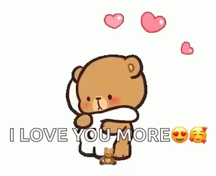

are, how soft your heart is, and how much you care about me in ways big and small. The way you support my crazy ideas without making me feel like they're impossible, and the way you look at me like I'm your person. You've become my safe place, my peace, and my partner in everything. I love you more than words can say.
Damilola, this is me saying thank you for three years of love, patience, and growth.  You are not just my girlfriend, you are my best friend, my gist partner, my encourager, my ride-or-die. Every time I look at you, I see the future I want, the home I want to build, the life I want to live. If these three years have been this sweet, I can't wait to see what forever will taste like with you. You're not just a